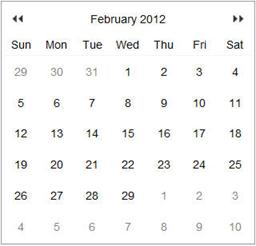
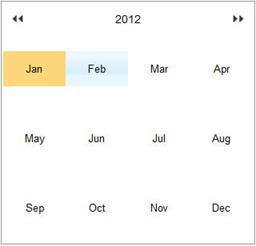
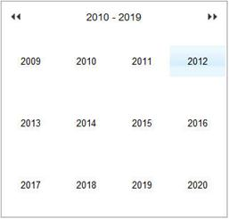
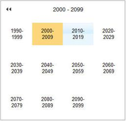

Feature Summary
Calendar Navigation Mode property allows navigating the months and years in quick manner. In that we have two client side events and two server side events for Zoom in and Zoom Out.
The following figure gives you an overview of zooming navigation in Calendar:


Day View Month View


Year View 10 Years View
Figure 126: Calendar Zooming with Day, Month, Year, and 10-Year Views
Where do I find Installed samples?
Sample Installation Location
Installed drive (C:) \Program Files\Syncfusion\Essential Studio\9.4.0.62\Samples
Viewing Samples
To view the samples:
1. Open the Syncfusion Dashboard.
2. Click the ASP.NET drop-down list and select Run Locally Installed Samples.
3. Navigate to Calendar > Calendar Zooming.